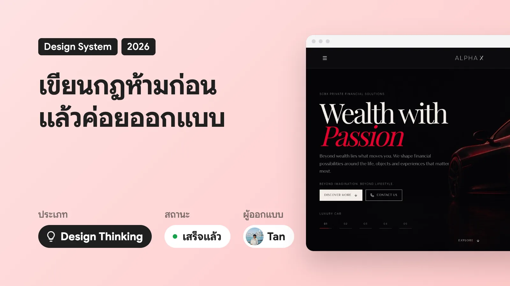
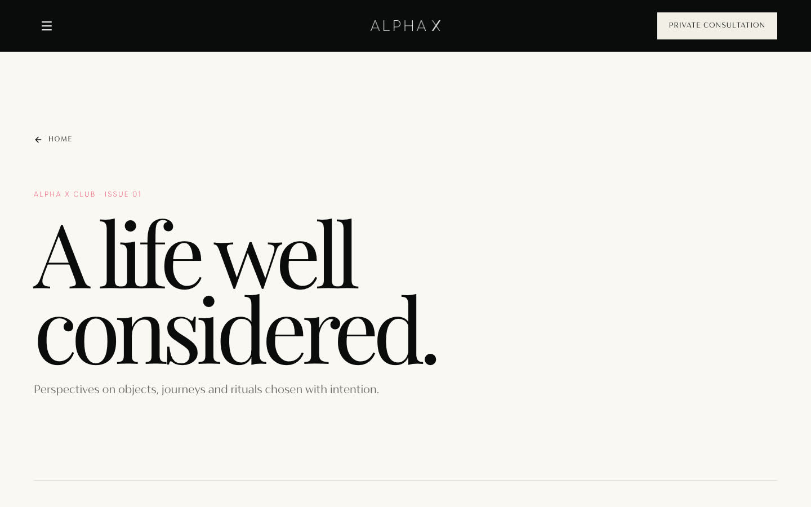
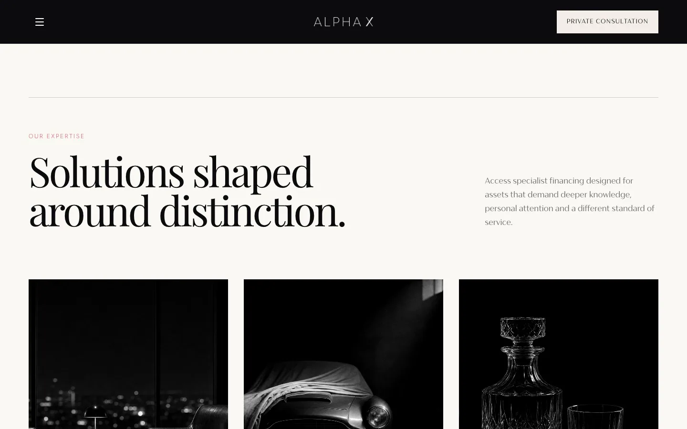

Premium Club Revamp
งานออกแบบที่เริ่มจากการยอมรับว่าความเสี่ยงจริงคืองานจะออกมาดูเหมือนของที่ใครก็ทำได้ แล้วออกแบบกระบวนการทั้งหมดขึ้นมาเพื่อกันข้อนั้นโดยเฉพาะ — เขียนข้อห้ามก่อนลงมือ ย้ายกติกาเข้าไฟล์ที่ตรวจได้ และทำของจริงก่อนทำเอกสาร

งาน revamp เว็บไซต์คลับระดับพรีเมียม ที่ความเสี่ยงอันดับหนึ่งไม่ใช่ทำไม่ทัน แต่คืองานออกมาดูเหมือนเทมเพลต — วิธีรับมือคือเขียนรายการสิ่งต้องห้ามให้ชัดตั้งแต่ก่อนเปิดไฟล์แรก แล้วใช้มันเป็นเกณฑ์ตรวจทุกหน้าและทุกสไลด์
ความเสี่ยงอันดับหนึ่งของงานนี้คือ “ดูออกว่าไม่ได้ตั้งใจทำ”
สำหรับแบรนด์ระดับนี้ งานที่ดูเหมือนเทมเพลตไม่ได้แค่ไม่สวย แต่มันสื่อว่าเราไม่เข้าใจว่าลูกค้าเป็นใคร

ถ้าเห็นงานนี้ในเว็บรวมผลงานนักออกแบบ จะเชื่อไหมว่าสตูดิโอเป็นคนทำ — คำถามเดียวนี้ถูกใช้เป็นเกณฑ์ผ่าน/ไม่ผ่านของทุกหน้าและทุกสไลด์ ตอบว่าไม่เมื่อไร แปลว่าต้องแก้ ไม่ใช่ต้องอธิบาย
จังหวะเดิมซ้ำทุกหน้า
การ์ดสามใบเท่ากันวางกลางจอ แล้ววนใช้แบบนั้นทุกสไลด์ทุกเซกชัน เป็นสัญญาณแรกที่คนดูจับได้ว่างานนี้ไม่ได้ออกแบบทีละหน้า แต่เทของลงโครงเดิม
ตัวหนังสือหนาดำเท่ากันหมดทุกหัวข้อ
เมื่อทุกหัวข้อเน้นเท่ากัน ก็เท่ากับไม่มีอะไรถูกเน้นเลย สายตาไม่รู้จะเริ่มตรงไหน และหน้าตาจะกลายเป็นแบบที่เห็นได้ทั่วไปทันที
ลูกเล่นที่ใคร ๆ ก็ใช้
ไล่สีม่วงฟ้า พื้นผิวกระจกฝ้า มุมโค้งทุกกล่อง เงาค่าเริ่มต้น และไอคอนโปรยเต็มหน้า — แต่ละอย่างไม่ผิด แต่พอมารวมกันคือลายเซ็นของงานที่ทำจากค่าเริ่มต้น
กำแพงตัวหนังสือที่ไม่มีจังหวะ
ย่อหน้ายาวติดกันโดยไม่มีคำไหนถูกดึงขึ้นมาเน้น ทำให้เนื้อหาที่ดีอ่านไม่ผ่านย่อหน้าแรก และทำให้สไลด์ดูเหมือนเอกสารมากกว่างานนำเสนอ
รายการสิ่งต้องห้าม เขียนก่อนออกแบบ ไม่ใช่ตอนรีวิว
ข้อห้ามที่เขียนไว้ล่วงหน้าตัดสินง่าย เพราะยังไม่มีงานให้เสียดาย ส่วนข้อห้ามที่คิดตอนรีวิวมักกลายเป็นการหาเหตุผลให้ของที่ทำไปแล้ว
การ์ดสามใบเท่ากัน มุมโค้ง เงาค่าเริ่มต้น วางกลางจอซ้ำทุกหน้า
แบ่งจอสัดส่วนใหญ่ไม่เท่ากัน ปล่อยให้พื้นที่ว่างทำงาน
ทุกหัวข้อหนาเท่ากัน เลยไม่มีอะไรถูกเน้น
เซริฟน้ำหนักเบา คู่ตัวพิมพ์ใหญ่บางที่เว้นช่องไฟกว้าง
ไล่สีม่วงฟ้า และกล่องกระจกฝ้า
พื้นดำของแบรนด์ แดงจากโลโก้ใช้เป็นเส้นเน้นเพียงจุดเดียว
| เรื่อง | กติกา | เหตุผล |
|---|---|---|
| ไอคอน | ชุดเดียวเท่านั้น | ใช้ชุดไอคอนเส้นชุดเดียวทั้งงาน ห้ามใช้อีโมจิ และห้ามวาดเองปนเข้ามา เพราะน้ำหนักเส้นที่ไม่ตรงกันมองออกทันทีแม้คนดูจะบอกไม่ถูกว่าอะไรผิด |
| เลย์เอาต์ | ไม่สมมาตร | แบ่งจอเป็นสัดส่วนใหญ่ชัด ๆ แล้วให้พื้นที่ว่างทำงาน ห้ามหั่นจอเป็นการ์ดย่อยเยอะ ๆ และห้ามใช้จังหวะเดิมสองหน้าติดกัน |
| ตัวอักษร | คุมน้ำหนัก | ใช้ฟอนต์ของแบรนด์คู่กับเซริฟน้ำหนักเบา ห้ามหัวข้อหนาดำทุกหัว ให้คอนทราสต์มาจากขนาดและสไตล์ ไม่ใช่จากความหนาอย่างเดียว |
| ภาพ | ต้องกำกับศิลป์ | ทุกภาพต้องเกรดสีเข้าชุดเดียวกัน มีเกรน มีแสงที่ไม่สมบูรณ์แบบ ภาพไหนดูสังเคราะห์ชัดให้ทำใหม่หรือตัดทิ้ง ไม่ใช้เพราะเสียดาย |
| ข้อความ | ห้ามคำโหล | ประโยคสั้น มั่นใจ ไม่มีคำอย่าง “ยกระดับ” “ปลดล็อก” “ไร้รอยต่อ” และไม่มีเครื่องหมายอัศเจรีย์ เพราะคำเหล่านี้บอกว่าไม่ได้เขียนเพื่อแบรนด์นี้โดยเฉพาะ |
| ร่องรอย craft | ต้องมี | ใส่สิ่งที่เทมเพลตไม่มี — โมทีฟกราฟิกที่ถอดมาจากตัวโลโก้ ลายที่มาจากงานพิมพ์ของแบรนด์ และระบบเลขลำดับหน้า ทั้งหมดนี้คือสิ่งที่ทำให้งานดูเหมือนมีคนคิด |
ระบบดีไซน์ที่บังคับตัวเองได้ ไม่ใช่แค่เอกสารแนะนำ
กติกาที่อยู่ในหัวคนอย่างเดียวจะหลุดเสมอตอนงานเร่ง จึงย้ายให้มากที่สุดไปอยู่ในไฟล์ที่ตรวจได้
ไฟล์ token ไฟล์เดียว ใช้ร่วมกันทุกที่
ประกาศสี ตัวอักษร และระยะห่างไว้ที่เดียว แล้วให้ทั้งเว็บสาธิตและงานนำเสนอดึงไปใช้ชุดเดียวกัน สีที่ไม่ได้อยู่ในไฟล์นี้คือสีที่ใช้ไม่ได้
ตัวตรวจคอนทราสต์ที่ต้องผ่านก่อนใช้สี
มีสคริปต์ตรวจคู่สีทุกคู่ในระบบ ต้องขึ้นว่าผ่านทั้งหมดก่อนถึงจะเอา token ไปใช้ได้ ทำให้เรื่องการอ่านออกไม่ขึ้นกับว่าวันนั้นใครนึกได้
ฟอนต์เก็บไว้ในโปรเจกต์เอง
ไม่พึ่งบริการฟอนต์ภายนอก เพราะหน้าที่เปิดตอนนำเสนอแล้วฟอนต์ไม่มา คือหน้าที่พังในนาทีที่สำคัญที่สุด
oklch(16% 0.004 285)oklch(21% 0.006 285)oklch(57% 0.24 23)oklch(72% 0.10 84)oklch(95% 0.012 85)ทำให้ปรับความสว่างของสีได้โดยที่เฉดไม่เพี้ยนตาม ซึ่งสำคัญมากกับงานโทนเข้มที่มีสีเน้นเพียงสีเดียว — เวลาต้องทำสีเน้นให้อ่อนลงเพื่อผ่านคอนทราสต์ สีจะไม่กลายเป็นคนละสี
สลับลำดับงาน — ทำของที่กดได้จริงก่อน แล้วค่อยทำเอกสารนำเสนอ
เดิมวางแผนจะทำงานนำเสนอก่อนแล้วค่อยทำตัวอย่างเว็บ แต่เปลี่ยนลำดับกลางทางเพราะเหตุผลที่ชัดเจน


ภาพจำลองในสไลด์ พิสูจน์ไม่ได้ว่าของจริงทำได้
งานนำเสนอที่ใส่ภาพจำลองสวย ๆ บอกได้แค่ว่าเราวาดรูปเป็น ไม่ได้บอกว่าเว็บจริงจะออกมาแบบนั้น และคนดูที่เคยเจองานลักษณะนี้มาเยอะจะรู้ทัน
สีเน้นของแบรนด์ตกเกณฑ์คอนทราสต์ในหลายจุดพร้อมกัน
สีเน้นที่มาจากโลโก้ดูดีบนพื้นเข้ม แต่พอเอาไปใช้กับตัวหนังสือขนาดเล็ก คอนทราสต์ไม่ผ่านเกณฑ์ และเป็นปัญหาเดียวกันที่กระจายอยู่หลายจุดทั่วงาน
ทุกหน้าถูกกติกา แต่รวมกันแล้วยังดูจืด
ทำตามข้อห้ามครบทุกข้อ ไม่มีอะไรผิด แต่ผลลัพธ์ยังไม่มีบุคลิก เพราะรายการสิ่งต้องห้ามบอกได้แค่ว่าอย่าทำอะไร ไม่ได้บอกว่าต้องมีอะไร
รีวิวทีละหน้าโดยมีเกณฑ์ ไม่ใช่รีวิวด้วยความรู้สึกรวม ๆ
ทำตารางสถานะรายหน้าไว้ ทุกหน้าต้องถูกตัดสินทีละหน้าว่าผ่านหรือยังไม่ผ่าน พร้อมระบุสิ่งที่ต้องแก้
- ตารางสถานะรายหน้า — ผ่าน / กำลังดู / ยังไม่ดู พร้อมโน้ตว่าหน้าไหนถูกออกแบบใหม่ทั้งหน้าและเปลี่ยนอะไรไปบ้าง
- คอนทราสต์ถูกไล่แก้เป็นชุด ไม่ใช่ทีละจุดตอนบังเอิญเห็น เพราะปัญหาที่มาจาก token เดียวกันจะกลับมาใหม่เสมอถ้าแก้แค่ปลายทาง
- ไล่ดูสามความกว้างเสมอ — ออกแบบจากจอเล็กก่อน แล้วขยายขึ้น ไม่ใช่ออกแบบจอใหญ่แล้วค่อยบีบลง
- เกณฑ์สุดท้ายเป็นคำถามเดียว — ถ้าเห็นงานนี้ในที่ที่นักออกแบบเอาผลงานไปลง จะเชื่อไหมว่าสตูดิโอทำ ตอบไม่ได้เต็มปาก แปลว่ายังไม่ผ่าน

1440 768
768 393
393สิ่งที่เอาไปใช้ต่อได้กับงานอื่น
วิธีทำงานชุดนี้ไม่ได้ผูกกับแบรนด์ใดแบรนด์หนึ่ง และถูกเอามาใช้กับงานถัดมาแล้ว

- เขียนรายการสิ่งต้องห้ามก่อนเริ่ม — เป็นเครื่องมือที่ถูกที่สุดในการกันงานไม่ให้ไถลไปหาค่าเริ่มต้น และใช้เป็นภาษากลางเวลาคุยกันว่าทำไมถึงต้องแก้
- ย้ายกติกาเข้าไฟล์ที่ตรวจได้ — คอนทราสต์ที่มีสคริปต์ตรวจ กับคอนทราสต์ที่อาศัยความจำ ให้ผลต่างกันมากตอนงานเร่ง
- ทำของที่กดได้จริงก่อนทำเอกสาร — ได้ทั้งความน่าเชื่อถือและได้พิสูจน์ข้อเสนอทางเทคนิคไปพร้อมกันในงานชิ้นเดียว
- ข้อห้ามได้งานที่ปลอดภัย กติกาเชิงบวกได้งานที่ดี — ต้องมีทั้งสองอย่างคู่กัน ถ้ามีแต่ข้อห้ามจะได้งานที่ไม่มีอะไรผิดแต่ก็ไม่มีอะไรน่าจำ